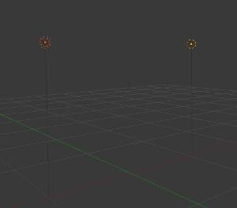

简介¶
Blender comes equipped with five different lamp types, each with its own unique strengths and limitations. Here are the available lamps:
- Point is an omni-directional point light source, similar to a light bulb.
- Spot is a directional point light source, similar to ... a spot.
- Area is a source simulating an area which is producing light, as windows, neons, TV screens.
- Hemi simulates a very wide and far away light source, like the sky.
- Sun simulates a very far away and punctual light source, like the sun.

{kind=link}
Visual height and shadow markers of two points lamps. Ray Shadow is enabled on the left lamp.
You can add new lamps to a scene using the Add menu in the top header, or with
, Shift-A.
Once added, a lamp’s position is indicated in the 3D视图 by a solid dot in a circle, but most types also feature dashed wire-frames that help describe their orientation and properties. While each type is represented differently, there are some visual indicators common to all of them:
- Shadows
- If shadows are enabled, an additional dashed circle is drawn around the solid circle. This makes it easier to quickly determine if a lamp has shadows enabled.
- Vertical Height Marker
- This is a dim gray line, which helps locate the lamp’s position relative to the global XY plane.